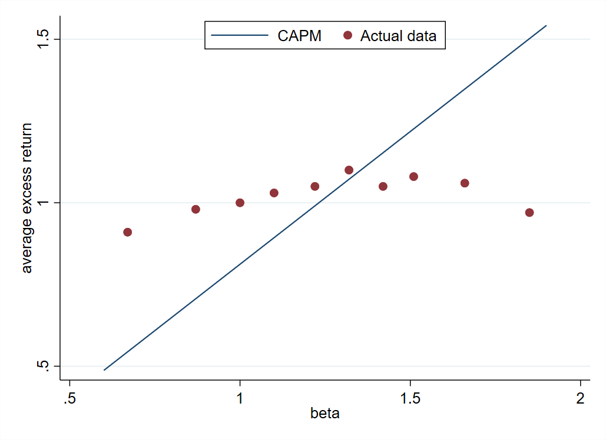

|
October 10, 2020 Is the CAPM fake news? Corporations and non-profit organizations constantly make capital budgeting decisions: whether to build a new infrastructure, develop a green technology, launch a new business line, buy a company, and so on. Making right capital budgeting decisions requires to assess correctly the value of the future benefits generated by each project. Because these benefits are usually uncertain, their value must be discounted for risk. The CAPM tells us how to do this risk adjustment. There are two important things to realize about the CAPM. First, it is a model (CAPM stands for Capital Asset Pricing Model). This means that it is based on assumptions and given these assumptions tells us how to discount for risk. For example, the CAPM makes assumptions on how much people are averse to tail risk, which is the risk of very unlikely but extremely negative events. Second, the CAPM is a normative model. It says how we should calculate risk-adjusted valuation. This does not mean that people necessarily follow these recommendations. People, even professionals, can make mistake in their investment decisions. Now, let's look at the data and see whether assets are priced according to the CAPM in reality. The CAPM says that the expected return (a.k.a. the discount rate) on any asset should be proportional to the asset's exposure to market risk (a.k.a., the market beta of the asset). In equation: E(r) = rf + beta * (E(rm)-rf) where: E(r): expected return on the asset, In words, assets with higher beta have higher return on average. The graph below considers all stocks traded in the US, groups them into ten portfolios based on their beta, and plots their average return in excess of the risk-free rate (that is, E(r)-rf) as a function of their beta. The CAPM says that the relation between expected excess return and beta should be a line with slope equal to the market risk premium and going through the origin. This is the blue line on the graph. It is called the security market line. The red dots are the data. They depict an upward slopping security market line, so stocks with a higher beta earn higher returns on average, but the relation is much weaker than predicted by the CAPM. The actual security market line is much flatter than in the CAPM. How do we interpret the deviation from the CAPM? There are two interpretations of the deviation from the CAPM. The first one is that stocks are correctly priced by the market and the CAPM is wrong. The CAPM could be wrong if its assumptions are not satisfied in reality. For instance, people may fear tail risk more than the CAPM assumes. The second interpretation is just the opposite: stocks are mispriced in the market is wrong and the CAPM is right. For instance, stock market investors may fail to properly evaluate risk and overpay for high beta stocks. Overpaying for high beta stocks means that their return will be low, explaining why the red dots are below the blue line in the high beta region of the graph. Finding out which interpretation is correct is an active area of research. This matters for capital budgeting decisions. If markets are right, we should value projects using the discount rate implied by the flattish security market line observed in the market. But if markets are inefficient, we should value projects using the CAPM. The most current practice of companies' chief financial officers and investment bankers is to use the CAPM. In the next post, we will see how mergers and acquisitions XXXXXXXXXXX |